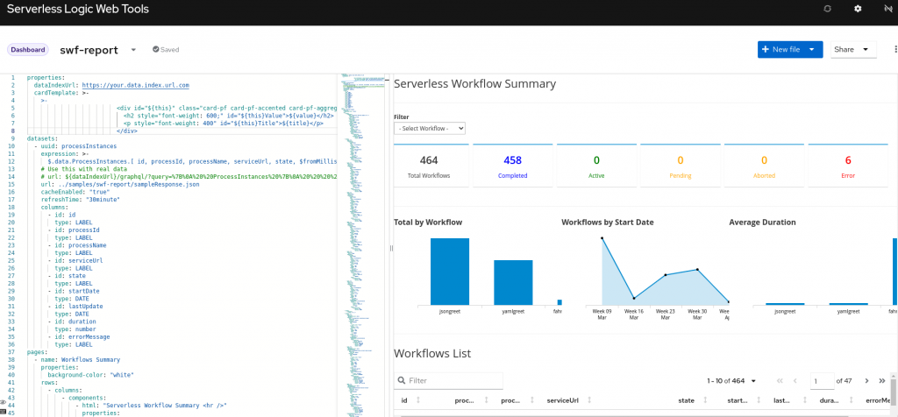

DashBuilder: Getting Started Guide
DashBuilder is a full-featured web application that allows non-technical users and programmers to create business dashboards.
Dashboard data can be extracted from heterogeneous sources of information such as Prometheus, JDBC databases, or regular text files.
The resulting dashboard can be deployed in a cloud environment using DashBuilder Runtime.
In this guide, we will show you how to create your first dashboard using DashBuilder in designer and Java mode.
Creating Dashboards using DashBuilder Designer
DashBuilder Designer allows users to visually create dashboards using a web application. In this section, we will show how to get started with this tool.
How to start the Designer?
You can run DashBuilder Designer using the following docker command
docker run -dp 8080:8080 quay.io/kogito_tooling_bot/dashbuilder-authoring:latest
Once it started access http://localhost:8080/dashbuilder-authoring on the browser,
DashBuilder Authoring contains the tools to create data sets, pages, navigation and at the end, you can export your work to run on a cloud environment.
Data Sets
Dashboards need to be fed with data and in DashBuilder, the source of data in your dashboards are data sets. Currently, we support the following data set types:
- Prometheus: Generate a data set based on a Prometheus query
- Kafka: Generate a data set from Kafka metrics.
- Bean: Use to generate a data set from a Java class
- CSV: Use to generate a data set from a remote or local CSV file
- SQL: Use to generate a data set from an ANSI-SQL compliant database
- Elastic Search: Use to generate a data set from Elastic Search nodes
- Execution Server: Use to generate a data set using the custom query feature of an Execution Server
You can access the Data Sets tool by going to Administration -> Data Sets or click on the Data Sets link on the home page.
As an example, you can create a data set using a CSV with game console sales by year and manufacturer. In DashBuilder we create a new data set of type CSV and fill out with the following information:
- Name: Any name you want
- File URL: https://gist.githubusercontent.com/jesuino/9f8d38d7726b257c6313f4ca875e7df1/raw/099b31fe738965aee633650fb9c31c7403582abc/console_data_csv (click on the little cloud switch to URL)
- Separator Char: ,
- Quote chart: “

Once we click on test we have a preview of the data:

See in the left side pane that DashBuilder identifies the column type, but you can force a certain type for a column. In the Preview screen there’s also the Filter tab where it is possible to filter a part of the data set:

Clicking on Next will finish the creation wizard and the data set is saved, but it is also possible to tweak cache information in the “Advanced” tab.
Once the data set is created you can access it later in the Data Set Explorer tab.

For more information about CSV data sets check post ADD CSV DATASETS FOR AUTHORING DASHBOARDS
Content Manager
Content Manager is the tool that allows you to create pages. To access it go to Administration -> Content Manager or use the Design home menu.

The content manager has two buttons on the top left side which are Pages and Navigation. Let’s talk about pages.
Pages
A page is where the actual dashboard lives. A page is composed of rows and columns and finally a component. The component can contain static content, such as HTML or a Logo, or a dynamic component that displays content from a data set.
When you click on New Page you are prompted to enter the page name and then you are directed to edit the page.


The page editor has on the left side components that can be dragged to the page. The components are divided into categories:
- Core: Base static components that are not related to dashboards or navigation;
- Navigation: Components that allow you to embed other pages inside your page;
- Reporting: Dashboard components such as charts and tables;
- Heatmaps: Specific components that show a business process heatmap.

When you drag a component to the page a dialog with the component properties will appear. This dialog changes according to the component used.

On the right side, you will find the properties of the select component. The properties change according to the select part, which is: page, row, column, or component. The properties are basically CSS properties that allow you to change color, alignment, text, and margin.

Reporting Components

Reporting components make use of data sets to display the data in different ways. All these components have a dialog with three tabs:
- Type: In this tab, you can dynamically change the component type for the data set you selected
- Data: The data that will be used by this component. Once the data set is collected you can configure it according to the displayer you selected
- Display: All the chart settings such as size, axis configuration, and more.

Taking as an example the “Console Sales” from the Data Sets section, we can create a page called “Console Sales” and on this page, you can drag a “Table” component to see all the data from the data set. Notice also the table has sort and columns selection functionality.

Now, see the total(million) and release_year column values, notice that it is formatted as a number. We can change it by editing the component and modifying the column settings.

The column edition is a powerful feature that allows us to change the column name, evaluate an expression against the column values and apply a formatting pattern for number columns.

A group of reporting components is the charts. The most famous type of XY charts are supported by DashBuilder: Bar, Pie, Line, Area, and Bubble:

When using a chart we must correctly set up the data set to select which column will be the categories and how to group the other columns to create the Y-axis values. Take for example the data set we created previously and let’s say we want to see the number of consoles sold by each manufacturer.
In this case, the manufacturer will be the category and the Y-axis will be the sum of all consoles sales. On a new page called “Consoles by Manufacturer” we can place a bar chart that shows this information:

You can also extract a single value and show it using the Metric component. In a new page called “Console Sales Summary” we can place two metrics component to show “Consoles Released” and “Total Consoles Sold” metrics:
By default the metric will show the value for all manufacturers, in the same ‘Console Sales Summary’, we can add filter components to allow filtering by the manufacturer. The filter components can be found under the Reporting section and it can be displayed as a combo box, or labels for text columns, or a slider for date and number columns.

When placing a filter we must make sure that the component to be filtered is listening for filters, this is done in the Filter section of the component settings:

Reporting components have also a great property to poll data from a data set. In the Refresh tab, you can set a value in seconds that the component will use to constantly get data from a data set, this is particularly with dynamic data sets such as Prometheus.

Finally, if you use components such as Time Series or Heatmap you will notice a different dialog. This happens because these components were built using External Components, which were discussed in DashBuilder EXTERNAL COMPONENTS JAVASCRIPT API article.

Navigation
You can navigate through pages using the navigation tool. It can be accessed also in the Content Manager. It opens in the left side pane:

We can organize our menus using the navigation and it will be displayed when the dashboard is deployed. You can also create groups for pages. Let’s create one for the pages we created in this article:

You can embed a single page inside other pages or use Navigation Components to embed a group of pages.

Let’s create a new page called “index” to add tab navigation to it so we can navigate to all the pages related to console sales.

The page name index is important because later it will be used as the welcome page when we deploy this dashboard.
Export and import dashboards
DashBuilder supports import/export data in a ZIP format. You can work on a dashboard, export the ZIP and later import it on a clean DashBuilder installation to continue working on it or deploy the dashboard to production using DashBuilder Runtime.
The import/export tool can be used using Data Transfer from the home page or using the menu Administration -> Data Transfer.

You can select what will be exported using the button “Custom Export”

Notice that it is not possible to export pages without its data sets dependencies.

Once the dependencies are fixed we can export a ZIP file. So at this point, we are ready to export our work during this article. We should have 4 pages and 1 data set to export.

You can also import a ZIP previously exported. To do it use the select a file in the Import section, upload, and then click on Import. Remember to refresh the page after it is done otherwise the changes won’t be visible.
Creating Dashboards using Java
If you are a Java developer you must know that DashBuilder also has an API to create dashboards using pure Java. The result is also the ZIP that can either be imported to DashBuilder Designer or be directly deployed in DashBuilder Runtime. The API was covered in the article Building Dashboards using Plain Java.

Creating Dashboards using YAML
Dashbuilder can also be defined in YAML formats using a web browser and Serverless Logic Web Tools. For example, you can edit the default SWF report right now using this link: https://start.kubesmarts.org/#/import?url=https://start.kubesmarts.org/samples/swf-report/swf-report.dash.yml&renameWorkspace=Serverless+Workflow+Report
For more information see Dashbuilder YAML guide.

Dashboards deployment
When your work is done and you want to publish it in your company for mass consumption then DashBuilder Designer is not suitable. For this purpose, we have a cloud-native application called DashBuilder Runtime. Last year we talked about it in Introducing DashBuilder Runtime.
To deploy a single dashboard we can use a Docker file that copies a dashboard inside a DashBuilder runtime container. The authentication/authorization can be done with Keycloak or any other SSO solution, but for now, we only add a single admin/admin user:
| FROM quay.io/wsiqueir/dashbuilder-runtime:latest | |
| # adds default admin user | |
| RUN /opt/jboss/wildfly/bin/add-user.sh -a -u 'admin' -p 'admin' -g 'admin' | |
| ENV LANG en_US.UTF-8 | |
| COPY dashboard.zip . | |
| CMD ["/opt/jboss/wildfly/bin/standalone.sh", "-b", "0.0.0.0", "-Ddashbuilder.runtime.import=/opt/jboss/dashboard.zip"] |
The docker file should be placed in the same directory as the ZIP exported from DashBuilder Runtime and the ZIP should be named dashboard.zip. You can build the docker image using the following command with podman or docker:
docker build -t console_data_dashboard .
Then run the image using the command below and in a few seconds access the dashboard in localhost:8080. Before building the image make sure that the designer’s container is stopped or start DashBuilder runtime in a different port to avoid conflict with port 8080:
docker run -dtp 8080:8080 console_data_dashboard

Conclusion
In this guide, we show you how to get started with DashBuilder. If you follow all steps you should be ready to create your own dashboards. Stay tuned to the blog for more news about DashBuilder.